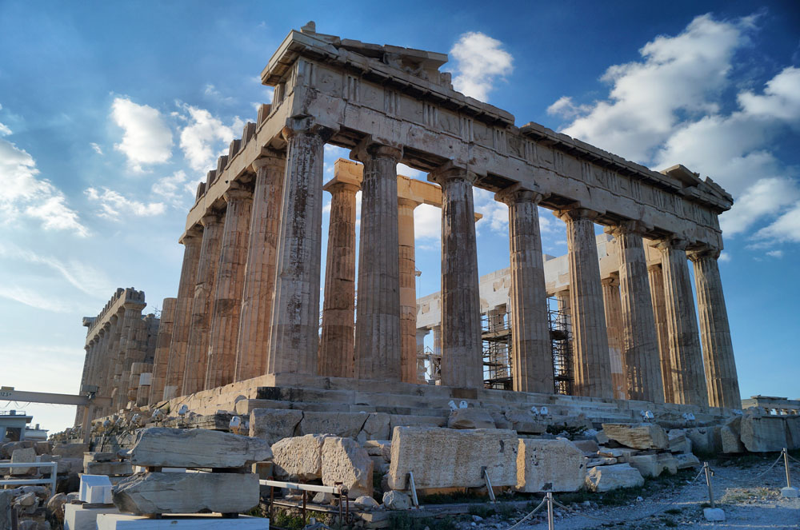

Опис найвідоміших історичних та сучасних пам'яток міста:
В Афнінах зберіглося багато історичних та архітектурних пам'яток, які привертають увагу туристів з усього світу. Серед них варто виділити старовинні церкви, палаці, фортеці та музеї, які розповідають історію міста.
Пропозиції маршрутів для пішохідних прогулянок чи екскурсій:
Для туристів пропонуються різноманітні маршрути пішохідних прогулянок та екскурсій, які дозволять їм пізнати кожний куток міста, його культуру та історію.
Перелік місць для проживання та харчування
У місті доступні різноманітні готелі, гостьові будинки та ресторани, які пропонують широкий вибір комфортного проживання та насолоди смачними стравами місцевої та міжнародної кухні.